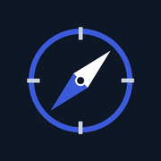

<!doctype html>
<html lang="tr">
<head>
<meta charset="utf-8">
<meta name="viewport" content="width=device-width, initial-scale=1, viewport-fit=cover">
<meta name="apple-mobile-web-app-capable" content="yes">
<meta name="mobile-web-app-capable" content="yes">
<meta name="apple-mobile-web-app-status-bar-style" content="black-translucent">
<meta name="apple-mobile-web-app-title" content="Pusula">
<meta name="theme-color" content="#F6F7F9" media="(prefers-color-scheme: light)">
<meta name="theme-color" content="#0B1220" media="(prefers-color-scheme: dark)">
<meta name="robots" content="noindex, nofollow">
<title>Pusula</title>
<link rel="manifest" href="manifest.webmanifest">
<link rel="apple-touch-icon" href="icon-180.png">
<link rel="preconnect" href="https://fonts.googleapis.com">
<link rel="preconnect" href="https://fonts.gstatic.com" crossorigin>
<link href="https://fonts.googleapis.com/css2?family=Inter:wght@400;500;600;700&family=Space+Grotesk:wght@500;600;700&display=swap" rel="stylesheet">
<style>
:root{
  --bg:#F6F7F9;--kart:#FFFFFF;--cizgi:#E3E6EB;--ayrac:#EEF0F3;--yazi:#0E1726;--soluk:#5B6576;
  --vurgu:#1D4ED8;--vurgu-yumusak:#E8EEFD;--vurgu-yazi:#1E3A8A;--art:#0B7A43;--art-zemin:#E7F4EC;
  --eksi:#B42318;--eksi-zemin:#FDECEA;--uyari-zemin:#FEF3E2;--uyari-yazi:#8A3B06;--gri:#EEF0F3;
  --endeks:#9AA3B2;--sma200:#B45309;--koyu:#0E1726;--koyu-yazi:#FFFFFF;
  --govde:Inter,system-ui,-apple-system,sans-serif;--baslik:"Space Grotesk",Inter,system-ui,sans-serif;
}
@media (prefers-color-scheme: dark){
  :root:not([data-theme="light"]){--bg:#0B1220;--kart:#131C2E;--cizgi:#233047;--ayrac:#1B263A;--yazi:#E8ECF3;--soluk:#9AA6B8;
    --vurgu:#7B98FF;--vurgu-yumusak:#1A2650;--vurgu-yazi:#C7D3FF;--art:#4ADE80;--art-zemin:#12301F;
    --eksi:#F87171;--eksi-zemin:#3A1515;--uyari-zemin:#3A2508;--uyari-yazi:#FBBF77;--gri:#1B263A;
    --endeks:#6B7686;--sma200:#F59E0B;--koyu:#E8ECF3;--koyu-yazi:#0B1220;color-scheme:dark;}
}
:root[data-theme="dark"]{--bg:#0B1220;--kart:#131C2E;--cizgi:#233047;--ayrac:#1B263A;--yazi:#E8ECF3;--soluk:#9AA6B8;
    --vurgu:#7B98FF;--vurgu-yumusak:#1A2650;--vurgu-yazi:#C7D3FF;--art:#4ADE80;--art-zemin:#12301F;
    --eksi:#F87171;--eksi-zemin:#3A1515;--uyari-zemin:#3A2508;--uyari-yazi:#FBBF77;--gri:#1B263A;
    --endeks:#6B7686;--sma200:#F59E0B;--koyu:#E8ECF3;--koyu-yazi:#0B1220;color-scheme:dark;}

*{box-sizing:border-box}
html,body{margin:0;background:var(--bg);color:var(--yazi);font-family:var(--govde);-webkit-text-size-adjust:100%}
body{min-height:100vh;min-height:100dvh}
button{font:inherit;color:inherit;cursor:pointer}
h1,h2,h3{font-family:var(--baslik);margin:0}
a{color:var(--vurgu)}
.uygulama{max-width:520px;margin:0 auto;min-height:100dvh;display:flex;flex-direction:column}
.ust{padding:calc(env(safe-area-inset-top) + 14px) 20px 10px;display:flex;align-items:center;justify-content:space-between;gap:12px;position:sticky;top:0;background:var(--bg);z-index:5}
.ust h1{font-size:24px;font-weight:700}
.ust .alt{font-size:12px;color:var(--soluk);margin-top:2px}
.icerik{flex:1;padding:0 16px calc(96px + env(safe-area-inset-bottom));display:flex;flex-direction:column;gap:12px}
.kart{background:var(--kart);border:1px solid var(--cizgi);border-radius:18px;padding:16px;display:flex;flex-direction:column;gap:12px}
.kart h2{font-size:17px;font-weight:600}
.etiket{font-size:13px;color:var(--soluk)}
.buyuk{font-family:var(--baslik);font-size:34px;font-weight:700;letter-spacing:-.5px}
.art{color:var(--art)}.eksi{color:var(--eksi)}.soluk{color:var(--soluk)}
.hap{display:inline-flex;align-items:center;gap:6px;padding:6px 12px;border-radius:999px;font-size:12px;font-weight:600;white-space:nowrap}
.hap.sanal{background:var(--uyari-zemin);color:var(--uyari-yazi)}
.hap.gercek{background:var(--eksi-zemin);color:var(--eksi)}
.rozet{padding:4px 10px;border-radius:999px;font-size:11px;font-weight:700;white-space:nowrap}
.r-AL{background:var(--art-zemin);color:var(--art)}
.r-SAT{background:var(--eksi-zemin);color:var(--eksi)}
.r-PORTFOYDE{background:var(--vurgu-yumusak);color:var(--vurgu-yazi)}
.r-BEKLE{background:var(--gri);color:var(--soluk);font-weight:600}
.bilgi{padding:12px;border-radius:12px;background:var(--vurgu-yumusak);color:var(--vurgu-yazi);font-size:13px;line-height:1.45}
.bilgi.uyari{background:var(--uyari-zemin);color:var(--uyari-yazi)}
.liste{background:var(--kart);border:1px solid var(--cizgi);border-radius:18px;overflow:hidden}
.satir{width:100%;display:flex;align-items:center;gap:12px;padding:14px 16px;border:0;border-bottom:1px solid var(--ayrac);background:transparent;text-align:left;min-height:56px}
.satir:last-child{border-bottom:0}
.satir:active{background:var(--gri)}
.satir .ad{flex:1;display:flex;flex-direction:column;gap:2px;min-width:0}
.satir .ad b{font-size:15px;font-weight:600}
.satir .ad span{font-size:12px;color:var(--soluk);white-space:nowrap;overflow:hidden;text-overflow:ellipsis}
.satir .fiyat{display:flex;flex-direction:column;align-items:flex-end;gap:2px;min-width:84px}
.satir .fiyat b{font-size:15px;font-weight:600}
.satir .fiyat span{font-size:12px;font-weight:600}
.bolum-baslik{display:flex;justify-content:space-between;align-items:baseline;padding:6px 4px 0}
.bolum-baslik h2{font-size:17px;font-weight:600}
.bolum-baslik span{font-size:12px;color:var(--soluk)}
.izgara{display:grid;grid-template-columns:repeat(2,minmax(0,1fr));gap:10px}
.kutu{padding:12px;border-radius:12px;background:var(--bg);display:flex;flex-direction:column;gap:2px}
.kutu span{font-size:12px;color:var(--soluk)}
.kutu b{font-size:16px}
.bar{display:flex;height:10px;border-radius:999px;overflow:hidden;background:var(--cizgi)}
.lejant{display:flex;flex-wrap:wrap;gap:14px;font-size:12px;color:var(--soluk)}
.lejant i{display:inline-block;width:14px;height:3px;border-radius:2px;margin-right:6px;vertical-align:middle}
.cipler{display:flex;gap:8px;overflow-x:auto;padding:0 4px}
.cip{height:36px;padding:0 14px;border-radius:999px;border:1px solid var(--cizgi);background:var(--kart);font-size:13px;font-weight:500;white-space:nowrap}
.cip.secili{background:var(--vurgu);border-color:var(--vurgu);color:#fff;font-weight:600}
.alt-menu{position:fixed;left:0;right:0;bottom:0;background:var(--kart);border-top:1px solid var(--cizgi);padding-bottom:env(safe-area-inset-bottom);z-index:10}
.alt-menu nav{max-width:520px;margin:0 auto;display:grid;grid-template-columns:repeat(3,minmax(0,1fr))}
.alt-menu button{height:64px;border:0;background:transparent;display:flex;flex-direction:column;align-items:center;justify-content:center;gap:4px;font-size:11px;color:var(--soluk)}
.alt-menu button[aria-current="page"]{color:var(--vurgu);font-weight:600}
.ikon-dugme{width:44px;height:44px;border-radius:12px;border:0;background:transparent;display:flex;align-items:center;justify-content:center;color:var(--yazi)}
.ikon-dugme:active{background:var(--gri)}
.dugme{height:50px;border-radius:14px;border:0;background:var(--vurgu);color:#fff;font-weight:600;font-size:15px;width:100%}
.dugme.ikincil{background:transparent;border:1px solid var(--cizgi);color:var(--yazi)}
.dugme:disabled{opacity:.6}
.kucuk{font-size:11px;line-height:1.5;color:var(--soluk);margin:0;padding:0 4px}
ul.nedenler{margin:0;padding-left:18px;display:flex;flex-direction:column;gap:8px;font-size:14px;line-height:1.5}
.bos{padding:18px;text-align:center;color:var(--soluk);font-size:14px;line-height:1.5}
.kilit{min-height:100dvh;display:flex;flex-direction:column;align-items:center;justify-content:center;gap:16px;padding:24px;max-width:420px;margin:0 auto}
.kilit img{width:84px;height:84px;border-radius:20px}
.kilit h1{font-size:28px}
.kilit form{width:100%;display:flex;flex-direction:column;gap:12px}
.alan{height:50px;border-radius:12px;border:1px solid var(--cizgi);background:var(--kart);color:var(--yazi);padding:0 14px;font:inherit;font-size:16px;width:100%}
.onay-satir{display:flex;align-items:center;gap:10px;font-size:14px;min-height:44px}
.onay-satir input{width:20px;height:20px;accent-color:var(--vurgu)}
.hata{color:var(--eksi);font-size:13px;min-height:18px;text-align:center}
.sayfa{position:fixed;inset:0;background:var(--bg);z-index:20;overflow-y:auto;-webkit-overflow-scrolling:touch}
.sayfa .uygulama{min-height:auto}
.perde{position:fixed;inset:0;background:rgba(0,0,0,.45);z-index:30;display:flex;align-items:flex-end;justify-content:center}
.levha{background:var(--kart);width:100%;max-width:520px;border-radius:20px 20px 0 0;padding:20px 20px calc(20px + env(safe-area-inset-bottom));display:flex;flex-direction:column;gap:12px}
.levha h2{font-size:19px}
.levha p{margin:0;font-size:14px;line-height:1.5}
.yukleniyor{opacity:.5;pointer-events:none}
svg.grafik{display:block;width:100%;height:auto}
.gizli{position:absolute;width:1px;height:1px;overflow:hidden;clip:rect(0 0 0 0);white-space:nowrap}
</style>
</head>
<body>
<div id="kok"></div>
<script>
"use strict";
const VERI_URL = "veri.enc.json";
const SIFRE_ANAHTARI = "pusula_sifre";
const S = { veri: null, tab: "portfoy", filtre: "tumu", detay: null, ornek: false, yukleniyor: false, levha: null, hata: "" };

// ---------------------------------------------------------------- yardımcılar
const esc = (x) => String(x ?? "").replace(/[&<>"']/g, (c) => ({ "&": "&amp;", "<": "&lt;", ">": "&gt;", '"': "&quot;", "'": "&#39;" }[c]));
const tl = (x, k = 2) => x == null ? "–" : new Intl.NumberFormat("tr-TR", { minimumFractionDigits: k, maximumFractionDigits: k }).format(x) + " ₺";
const tl0 = (x) => tl(x, 0);
const sayi = (x, k = 1) => x == null ? "–" : new Intl.NumberFormat("tr-TR", { maximumFractionDigits: k }).format(x);
const yuzde = (x, isaret = true) => x == null ? "–" : (isaret && x > 0 ? "+" : x < 0 ? "−" : "") + "%" + new Intl.NumberFormat("tr-TR", { minimumFractionDigits: 1, maximumFractionDigits: 1 }).format(Math.abs(x));
const isaretliTl = (x) => x == null ? "–" : (x > 0 ? "+" : x < 0 ? "−" : "") + tl(Math.abs(x), 0);
const renk = (x) => x > 0 ? "art" : x < 0 ? "eksi" : "soluk";
const tarihTr = (s) => { if (!s) return "–"; const d = new Date(s + (s.length === 10 ? "T00:00:00" : "")); return d.toLocaleDateString("tr-TR", { day: "numeric", month: "long", weekday: "short" }); };
const saatTr = (s) => s ? new Date(s).toLocaleString("tr-TR", { day: "numeric", month: "short", hour: "2-digit", minute: "2-digit" }) : "–";
const DURUM_ADI = { AL: "AL sinyali", SAT: "Yarın sat", PORTFOYDE: "Portföyde", BEKLE: "Bekle" };
const ls = { al(k) { try { return localStorage.getItem(k); } catch (e) { return null; } }, koy(k, v) { try { localStorage.setItem(k, v); } catch (e) {} }, sil(k) { try { localStorage.removeItem(k); } catch (e) {} } };

const IKON = {
  ev: '<path d="M3 11 12 4l9 7v9a1 1 0 0 1-1 1h-5v-6H9v6H4a1 1 0 0 1-1-1z"/>',
  liste: '<path d="M3 17l5-5 4 4 8-8"/><path d="M15 8h5v5"/>',
  ayar: '<path d="M4 6h10M18 6h2M4 12h4M12 12h8M4 18h12"/><circle cx="16" cy="6" r="2"/><circle cx="10" cy="12" r="2"/><circle cx="18" cy="18" r="2"/>',
  yenile: '<path d="M20 11a8 8 0 1 0-2.3 5.7"/><path d="M20 4v7h-7"/>',
  geri: '<path d="m15 6-6 6 6 6"/>',
  ileri: '<path d="m9 6 6 6-6 6"/>',
  saat: '<circle cx="12" cy="12" r="9"/><path d="M12 8v4l2 2"/>',
};
const ikon = (ad, boy = 22) => `<svg width="${boy}" height="${boy}" viewBox="0 0 24 24" fill="none" stroke="currentColor" stroke-width="2" stroke-linecap="round" stroke-linejoin="round" aria-hidden="true">${IKON[ad]}</svg>`;

// ---------------------------------------------------------------- şifre çözme
const b64 = (s) => Uint8Array.from(atob(s), (c) => c.charCodeAt(0));
async function coz(paket, sifre) {
  const km = await crypto.subtle.importKey("raw", new TextEncoder().encode(sifre), "PBKDF2", false, ["deriveKey"]);
  const anahtar = await crypto.subtle.deriveKey(
    { name: "PBKDF2", salt: b64(paket.salt), iterations: paket.iter, hash: "SHA-256" },
    km, { name: "AES-GCM", length: 256 }, false, ["decrypt"]);
  const acik = await crypto.subtle.decrypt({ name: "AES-GCM", iv: b64(paket.iv) }, anahtar, b64(paket.ct));
  return JSON.parse(new TextDecoder().decode(acik));
}

async function veriYukle(sifre) {
  const r = await fetch(VERI_URL + "?t=" + Date.now(), { cache: "no-store" });
  if (!r.ok) throw new Error(r.status === 404 ? "Henüz veri yok. Motor ilk kez çalıştıktan sonra tekrar deneyin." : "Veri alınamadı (" + r.status + ")");
  const paket = await r.json();
  try { return await coz(paket, sifre); }
  catch (e) { throw new Error("Şifre yanlış."); }
}

// ---------------------------------------------------------------- grafik
function grafik(seriler, gen = 320, yuk = 120, etiket = "Grafik") {
  const tum = seriler.flatMap((s) => s.d.filter((v) => v != null));
  if (tum.length < 2) return '<p class="kucuk">Grafik için yeterli veri yok.</p>';
  let min = Math.min(...tum), max = Math.max(...tum);
  const pay = (max - min) * 0.08 || 1; min -= pay; max += pay;
  const n = Math.max(...seriler.map((s) => s.d.length));
  const x = (i) => (n === 1 ? 0 : (i / (n - 1)) * gen);
  const y = (v) => yuk - ((v - min) / (max - min)) * yuk;
  const yollar = seriler.map((s) => {
    let p = "", basla = true;
    s.d.forEach((v, i) => { if (v == null) { basla = true; return; } p += (basla ? "M" : "L") + x(i).toFixed(1) + "," + y(v).toFixed(1) + " "; basla = false; });
    return `<path d="${p}" fill="none" stroke="${s.renk}" stroke-width="${s.kal || 2}" stroke-linejoin="round" stroke-linecap="round"${s.kesik ? ' stroke-dasharray="5 4"' : ""}/>`;
  }).join("");
  return `<svg class="grafik" viewBox="-2 -4 ${gen + 4} ${yuk + 8}" role="img" aria-label="${esc(etiket)}">${yollar}</svg>`;
}

// ---------------------------------------------------------------- ekranlar
function kilitEkrani() {
  const ornekVar = !!window.PUSULA_ORNEK;
  return `<main class="kilit">
    
    <h1>Pusula</h1>
    <p class="etiket" style="text-align:center;margin:0">Verileriniz şifrelidir. Motorda kullandığınız şifreyi girin.</p>
    <form id="kilitForm">
      <label class="gizli" for="sifre">Şifre</label>
      <input class="alan" id="sifre" type="password" autocomplete="current-password" placeholder="Şifre" required>
      <label class="onay-satir"><input type="checkbox" id="hatirla" checked> Bu cihazda hatırla</label>
      <button class="dugme" type="submit" ${S.yukleniyor ? "disabled" : ""}>${S.yukleniyor ? "Açılıyor…" : "Aç"}</button>
      ${ornekVar ? '<button class="dugme ikincil" type="button" id="ornekAc">Örnek veriyle göster</button>' : ""}
    </form>
    <p class="hata" role="alert">${esc(S.hata)}</p>
  </main>`;
}

function ustBar(baslik, alt) {
  const v = S.veri;
  return `<header class="ust">
    <div><h1>${esc(baslik)}</h1>${alt ? `<div class="alt">${alt}</div>` : ""}</div>
    <div style="display:flex;align-items:center;gap:4px">
      <span class="hap ${v.mod === "gercek" ? "gercek" : "sanal"}">${ikon("saat", 14)} ${v.mod === "gercek" ? "Gerçek mod" : "Sanal mod"}</span>
      <button class="ikon-dugme" id="yenile" aria-label="Verileri yenile">${ikon("yenile")}</button>
    </div>
  </header>`;
}

function ornekSerit() {
  return S.ornek ? '<p class="bilgi uyari" style="margin:0">Örnek veri gösteriliyor. Gerçek veriler motor kurulunca gelir.</p>' : "";
}

function portfoyEkrani() {
  const v = S.veri, p = v.portfoy, a = v.ayarlar || {};
  const egri = v.egri || [];
  const sonOz = egri.length ? egri[egri.length - 1] : null;
  const ilkOz = egri.length ? egri[0] : null;
  const endeksVar = egri.length > 1 && sonOz.endeks != null && ilkOz.endeks != null;
  const fark = endeksVar ? ((sonOz.oz / ilkOz.oz) - (sonOz.endeks / ilkOz.endeks)) * 100 : null;
  const hisseDeger = v.acik_pozisyonlar.reduce((t, x) => t + x.son * x.adet, 0);
  const hisseOran = p.ozkaynak ? (hisseDeger / p.ozkaynak) * 100 : 0;
  const satilacak = v.acik_pozisyonlar.filter((x) => x.yarin_satilacak);
  const tutulan = v.acik_pozisyonlar.filter((x) => !x.yarin_satilacak);

  const yarin = [
    ...v.yarin_alinacak.map((x) => satirHtml(x.sembol, "AL", `${x.planlanan_adet} adet · ~${tl(x.yaklasik_fiyat)} · ${x.guc}`)),
    ...satilacak.map((x) => satirHtml(x.sembol, "SAT", x.satis_nedeni || "")),
  ];

  return `${ustBar("Pusula", "Veri: " + tarihTr(v.veri_tarihi))}
  <main class="icerik">
    ${ornekSerit()}
    <section class="kart">
      <div style="display:flex;flex-direction:column;gap:4px">
        <span class="etiket">${v.mod === "gercek" ? "Hesap değeri" : "Sanal portföy değeri"}</span>
        <span class="buyuk">${tl0(p.ozkaynak)}</span>
        <span class="${renk(p.baslangictan_getiri_yuzde)}" style="font-size:14px;font-weight:600">${isaretliTl(p.ozkaynak - (a.baslangic_sermaye || p.ozkaynak))} (${yuzde(p.baslangictan_getiri_yuzde)}) · başlangıçtan beri</span>
      </div>
      ${egri.length > 1 ? grafik([
        { d: egri.map((e) => e.endeks ?? null), renk: "var(--endeks)", kesik: true },
        { d: egri.map((e) => e.oz), renk: "var(--vurgu)", kal: 2.5 },
      ], 320, 96, "Portföy ve BIST 100 karşılaştırması") + `<div class="lejant"><span><i style="background:var(--vurgu)"></i>Portföy</span>${endeksVar ? '<span><i style="background:var(--endeks)"></i>BIST 100 (al-tut)</span>' : ""}</div>` : '<p class="kucuk">Grafik birkaç işlem gününden sonra oluşur.</p>'}
      ${fark != null ? `<div class="bilgi${fark < 0 ? " uyari" : ""}"><strong>${fark >= 0 ? `Endeksin ${yuzde(fark, false)} önündesiniz.` : `Endeksin ${yuzde(fark, false)} gerisindesiniz.`}</strong> ${fark >= 0 ? "Strateji, sadece BIST 100 alıp beklemekten daha iyi gidiyor." : "Bu dönemde BIST 100 alıp beklemek daha iyi sonuç verdi."}</div>` : ""}
    </section>

    <section class="kart">
      <h2>Risk durumu</h2>
      <div class="bar"><div style="width:${(100 - hisseOran).toFixed(1)}%;background:var(--endeks)"></div><div style="width:${hisseOran.toFixed(1)}%;background:var(--vurgu)"></div></div>
      <div style="display:flex;justify-content:space-between;font-size:13px" class="soluk"><span>Nakit ${yuzde(100 - hisseOran, false)}</span><span>Hisse ${yuzde(hisseOran, false)} · ${v.acik_pozisyonlar.length}/${a.max_pozisyon_sayisi ?? "–"} pozisyon</span></div>
      <div style="font-size:13px" class="soluk">İşlem başına risk ${yuzde((a.islem_basina_risk || 0) * 100, false)} · en uzun vade ${(a.max_gun ?? 4) + 1} işlem günü</div>
    </section>

    <div class="bolum-baslik"><h2>Yarın açılışta</h2><span>${yarin.length} işlem</span></div>
    ${yarin.length ? `<div class="liste">${yarin.join("")}</div>` : '<div class="liste"><p class="bos">Yarın için alım veya satım yok. Strateji yalnızca koşullar oluşunca işlem yapar.</p></div>'}

    <div class="bolum-baslik"><h2>Açık pozisyonlar</h2><span>${tutulan.length}</span></div>
    ${tutulan.length ? `<div class="liste">${tutulan.map((x) => `<button class="satir" data-detay="${esc(x.sembol)}">
        <span class="ad"><b>${esc(x.sembol)}</b><span>${x.adet} adet · ${x.kalan_gun} gün kaldı</span></span>
        <span class="fiyat"><b>${tl(x.son)}</b><span class="${renk(x.kar_zarar_tl)}">${isaretliTl(x.kar_zarar_tl)}</span></span>
      </button>`).join("")}</div>` : '<div class="liste"><p class="bos">Açık pozisyon yok.</p></div>'}

    ${v.son_islemler.length ? `<div class="bolum-baslik"><h2>Son işlemler</h2><span>son ${v.son_islemler.length}</span></div>
    <div class="liste">${v.son_islemler.slice().reverse().map((x) => `<div class="satir">
        <span class="ad"><b>${esc(x.sembol)}</b><span>${esc(x.cikis_nedeni)} · ${x.gun} gün</span></span>
        <span class="fiyat"><b class="${renk(x.net_kar_tl)}">${isaretliTl(x.net_kar_tl)}</b><span class="${renk(x.getiri_yuzde)}">${yuzde(x.getiri_yuzde)}</span></span>
      </div>`).join("")}</div>` : ""}

    <p class="kucuk">Son güncelleme: ${saatTr(v.olusturulma)}. ${esc(v.uyari || "")}</p>
  </main>`;
}

function satirHtml(sembol, durum, aciklama) {
  return `<button class="satir" data-detay="${esc(sembol)}">
    <span class="rozet r-${durum}">${durum === "AL" ? "AL" : durum === "SAT" ? "SAT" : ""}</span>
    <span class="ad"><b>${esc(sembol)}</b><span>${esc(aciklama)}</span></span>
    ${ikon("ileri", 18)}
  </button>`;
}

function listeEkrani() {
  const iz = S.veri.izleme || [];
  const say = (f) => iz.filter(f).length;
  const filtreler = [
    ["tumu", "Tümü", iz.length, () => true],
    ["sinyal", "Sinyal var", say((x) => x.durum === "AL" || x.durum === "SAT"), (x) => x.durum === "AL" || x.durum === "SAT"],
    ["portfoy", "Portföyde", say((x) => x.durum === "PORTFOYDE" || x.durum === "SAT"), (x) => x.durum === "PORTFOYDE" || x.durum === "SAT"],
  ];
  const aktif = filtreler.find((f) => f[0] === S.filtre) || filtreler[0];
  const gosterilen = iz.filter(aktif[3]);
  return `${ustBar("İzleme listesi", "Veri: " + tarihTr(S.veri.veri_tarihi))}
  <main class="icerik">
    ${ornekSerit()}
    <div class="cipler" role="group" aria-label="Filtre">${filtreler.map((f) => `<button class="cip${f[0] === aktif[0] ? " secili" : ""}" data-filtre="${f[0]}" aria-pressed="${f[0] === aktif[0]}">${f[1]} (${f[2]})</button>`).join("")}</div>
    ${gosterilen.length ? `<div class="liste">${gosterilen.map((x) => `<button class="satir" data-detay="${esc(x.sembol)}">
      <span class="ad"><b>${esc(x.sembol)}</b><span>RSI(2) ${sayi(x.rsi)} · ${x.trend_yukari ? "trend yukarı" : "trend zayıf"}</span></span>
      <span class="rozet r-${x.durum}">${DURUM_ADI[x.durum]}</span>
      <span class="fiyat"><b>${tl(x.kapanis)}</b><span class="${renk(x.degisim_yuzde)}">${yuzde(x.degisim_yuzde)}</span></span>
    </button>`).join("")}</div>` : '<div class="liste"><p class="bos">Bu filtrede hisse yok.</p></div>'}
    <p class="bilgi" style="margin:0"><strong>Neden çoğu "Bekle"?</strong> Strateji yalnızca yükseliş trendindeki hisselerde sert bir düşüş olduğunda alım yapar. Bu koşul her gün oluşmaz.</p>
  </main>`;
}

function detayEkrani(sembol) {
  const v = S.veri;
  const iz = (v.izleme || []).find((x) => x.sembol === sembol);
  const al = v.yarin_alinacak.find((x) => x.sembol === sembol);
  const poz = v.acik_pozisyonlar.find((x) => x.sembol === sembol);
  const g = iz ? iz.grafik : null;
  let kart = "";
  if (al) {
    kart = `<section class="kart">
      <div style="display:flex;align-items:center;gap:10px"><span class="rozet r-AL" style="font-size:13px;padding:6px 12px">AL sinyali</span><span class="etiket">Güç: ${esc(al.guc)} · yarın açılışta</span></div>
      <h2>Neden bu sinyal?</h2>
      <ul class="nedenler">${al.nedenler.map((n) => `<li>${esc(n)}</li>`).join("")}</ul>
    </section>
    <section class="kart">
      <h2>Risk planı</h2>
      <div class="izgara">
        <div class="kutu"><span>Planlanan miktar</span><b>${al.planlanan_adet} adet</b><span>≈ ${tl0(al.planlanan_adet * al.yaklasik_fiyat)}</span></div>
        <div class="kutu"><span>En kötü senaryo</span><b class="eksi">−${tl0(al.en_kotu_senaryo_tl)}</b><span>${yuzde(al.en_kotu_senaryo_tl / v.portfoy.ozkaynak * 100, false)} sermaye</span></div>
        <div class="kutu"><span>Zarar-durdur</span><b>${tl(al.zarar_durdur)}</b><span>${yuzde((al.zarar_durdur / al.yaklasik_fiyat - 1) * 100)}</span></div>
        <div class="kutu"><span>Hedef</span><b>${tl(al.hedef)}</b><span>${yuzde((al.hedef / al.yaklasik_fiyat - 1) * 100)}</span></div>
      </div>
      <div class="bilgi"><strong>En geç çıkış: ${esc(al.en_gec_cikis)}.</strong> Fiyat 5 günlük ortalamanın üstünde kapanırsa daha erken satılır.</div>
    </section>`;
  } else if (poz) {
    kart = `<section class="kart">
      <div style="display:flex;align-items:center;gap:10px"><span class="rozet r-${poz.yarin_satilacak ? "SAT" : "PORTFOYDE"}" style="font-size:13px;padding:6px 12px">${poz.yarin_satilacak ? "Yarın satılacak" : "Portföyde"}</span><span class="etiket">${poz.gun}. gün</span></div>
      ${poz.yarin_satilacak ? `<div class="bilgi uyari">${esc(poz.satis_nedeni)}</div>` : ""}
      <div class="izgara">
        <div class="kutu"><span>Adet / giriş</span><b>${poz.adet} adet</b><span>${tl(poz.giris)}</span></div>
        <div class="kutu"><span>Kâr / zarar</span><b class="${renk(poz.kar_zarar_tl)}">${isaretliTl(poz.kar_zarar_tl)}</b><span>${yuzde((poz.son / poz.giris - 1) * 100)}</span></div>
        <div class="kutu"><span>Zarar-durdur</span><b>${tl(poz.stop)}</b></div>
        <div class="kutu"><span>Hedef</span><b>${tl(poz.hedef)}</b></div>
      </div>
      ${poz.yarin_satilacak ? "" : `<p class="kucuk">En geç ${poz.kalan_gun} işlem günü sonra açılışta satılır.</p>`}
    </section>`;
  } else {
    kart = `<section class="kart">
      <div style="display:flex;align-items:center;gap:10px"><span class="rozet r-BEKLE" style="font-size:13px;padding:6px 12px">Sinyal yok</span></div>
      <p style="margin:0;font-size:14px;line-height:1.5">${iz && iz.trend_yukari
        ? `Trend yukarı ama henüz sert bir geri çekilme yok (RSI(2) ${sayi(iz.rsi)}). Alım için RSI(2) değerinin 10'un altına inmesi beklenir.`
        : "Ana trend yukarı değil. Strateji düşüş trendindeki hisselerde alım yapmaz."}</p>
    </section>`;
  }
  return `<div class="sayfa" role="dialog" aria-label="${esc(sembol)} ayrıntıları"><div class="uygulama">
    <header class="ust" style="padding-left:8px">
      <div style="display:flex;align-items:center;gap:4px">
        <button class="ikon-dugme" id="geri" aria-label="Geri">${ikon("geri")}</button>
        <div><h1 style="font-size:20px">${esc(sembol)}</h1><div class="alt">${iz ? tarihTr(iz.tarih) : ""}</div></div>
      </div>
      ${iz ? `<div style="text-align:right"><div style="font-weight:700;font-size:18px">${tl(iz.kapanis)}</div><div class="${renk(iz.degisim_yuzde)}" style="font-size:12px;font-weight:600">${yuzde(iz.degisim_yuzde)} son gün</div></div>` : ""}
    </header>
    <main class="icerik" style="padding-bottom:calc(24px + env(safe-area-inset-bottom))">
      ${g ? `<section class="kart">
        ${grafik([
          { d: g.sma200, renk: "var(--sma200)", kesik: true },
          { d: g.sma5, renk: "var(--vurgu)", kal: 2 },
          { d: g.kapanis, renk: "var(--yazi)", kal: 2 },
        ], 320, 140, sembol + " son 60 gün fiyat grafiği")}
        <div class="lejant"><span><i style="background:var(--yazi)"></i>Fiyat</span><span><i style="background:var(--vurgu)"></i>5 gün ort.</span><span><i style="background:var(--sma200)"></i>200 gün ort.</span></div>
      </section>` : ""}
      ${kart}
    </main>
  </div></div>`;
}

function ayarlarEkrani() {
  const v = S.veri, a = v.ayarlar || {};
  return `${ustBar("Ayarlar")}
  <main class="icerik">
    ${ornekSerit()}
    <section class="kart">
      <h2>İşlem modu</h2>
      <div style="display:flex;justify-content:space-between;align-items:center;padding:12px;border-radius:12px;background:var(--${v.mod === "gercek" ? "eksi-zemin" : "uyari-zemin"});color:var(--${v.mod === "gercek" ? "eksi" : "uyari-yazi"})">
        <b>${v.mod === "gercek" ? "Gerçek mod · aktif" : "Sanal mod · aktif"}</b>
        <span style="font-size:13px">${v.mod === "gercek" ? "Aracı kurum hesabı" : tl0(a.baslangic_sermaye) + " sanal"}</span>
      </div>
      ${v.mod === "gercek" ? "" : '<button class="dugme" id="gercegeGec">Gerçek paraya geç</button>'}
    </section>
    <section class="kart">
      <h2>Kurallar</h2>
      <div class="izgara">
        <div class="kutu"><span>En uzun vade</span><b>${(a.max_gun ?? 4) + 1} işlem günü</b></div>
        <div class="kutu"><span>İşlem başına risk</span><b>${yuzde((a.islem_basina_risk || 0) * 100, false)}</b></div>
        <div class="kutu"><span>En fazla pozisyon</span><b>${a.max_pozisyon_sayisi ?? "–"}</b></div>
        <div class="kutu"><span>Çalışma saati</span><b>Hafta içi 18:40</b></div>
      </div>
      <p class="kucuk" style="padding:0">Kuralları değiştirmek için depodaki ayarlar.json dosyasını düzenleyin.</p>
    </section>
    <section class="kart">
      <h2>Cihaz</h2>
      <button class="dugme ikincil" id="kilitle">${S.ornek ? "Örnekten çık" : "Kilitle ve şifreyi unut"}</button>
      <p class="kucuk" style="padding:0">Son güncelleme: ${saatTr(v.olusturulma)}</p>
    </section>
  </main>`;
}

function levhaHtml() {
  if (S.levha !== "gercek") return "";
  const hazir = S.veri.ayarlar && S.veri.ayarlar.gercek_mod_hazir;
  return `<div class="perde" id="perde"><div class="levha" role="dialog" aria-modal="true" aria-labelledby="lb">
    <h2 id="lb">Gerçek paraya geçiş</h2>
    ${hazir
      ? `<p>Bundan sonra motorun kararları aracı kurum hesabınıza gerçek emir olarak gönderilecek. Kayıplar gerçek olur.</p>
         <p class="soluk" style="font-size:13px">Geçiş bir sonraki akşam çalışmasıyla devreye girer.</p>`
      : `<p>Gerçek mod için önce aracı kurumunuzla bağlantı kurulması gerekiyor. Bağlantı hazır olduğunda bu buton tek dokunuşla geçiş yapacak.</p>
         <p class="soluk" style="font-size:13px">O zamana kadar motor sanal modda, gerçek verilerle çalışmaya devam eder.</p>`}
    <button class="dugme ikincil" id="levhaKapat">Tamam</button>
  </div></div>`;
}

function anaEkran() {
  const ekran = S.tab === "liste" ? listeEkrani() : S.tab === "ayarlar" ? ayarlarEkrani() : portfoyEkrani();
  const sekme = (id, ad, ik) => `<button data-tab="${id}" ${S.tab === id ? 'aria-current="page"' : ""}>${ikon(ik)}${ad}</button>`;
  return `<div class="uygulama${S.yukleniyor ? " yukleniyor" : ""}">${ekran}</div>
    <div class="alt-menu"><nav aria-label="Ana menü">${sekme("portfoy", "Portföy", "ev")}${sekme("liste", "Liste", "liste")}${sekme("ayarlar", "Ayarlar", "ayar")}</nav></div>
    ${S.detay ? detayEkrani(S.detay) : ""}${levhaHtml()}`;
}

// ---------------------------------------------------------------- çizim ve olaylar
function ciz() {
  const kok = document.getElementById("kok");
  kok.innerHTML = S.veri ? anaEkran() : kilitEkrani();
}

document.addEventListener("click", (e) => {
  const t = e.target.closest("button, #perde");
  if (!t) return;
  if (t.dataset.tab) { S.tab = t.dataset.tab; S.detay = null; ciz(); window.scrollTo(0, 0); return; }
  if (t.dataset.filtre) { S.filtre = t.dataset.filtre; ciz(); return; }
  if (t.dataset.detay) { S.detay = t.dataset.detay; ciz(); return; }
  switch (t.id) {
    case "geri": S.detay = null; ciz(); break;
    case "yenile": yenile(); break;
    case "ornekAc": S.veri = window.PUSULA_ORNEK; S.ornek = true; ciz(); break;
    case "gercegeGec": S.levha = "gercek"; ciz(); break;
    case "levhaKapat": S.levha = null; ciz(); break;
    case "perde": if (e.target.id === "perde") { S.levha = null; ciz(); } break;
    case "kilitle": ls.sil(SIFRE_ANAHTARI); S.veri = null; S.ornek = false; S.tab = "portfoy"; S.hata = ""; ciz(); break;
  }
});

document.addEventListener("submit", async (e) => {
  if (e.target.id !== "kilitForm") return;
  e.preventDefault();
  const sifre = document.getElementById("sifre").value;
  const hatirla = document.getElementById("hatirla").checked;
  S.yukleniyor = true; S.hata = ""; ciz();
  try {
    S.veri = await veriYukle(sifre);
    if (hatirla) ls.koy(SIFRE_ANAHTARI, sifre);
  } catch (err) { S.hata = err.message; }
  S.yukleniyor = false; ciz();
});

async function yenile() {
  if (S.ornek) return;
  const sifre = ls.al(SIFRE_ANAHTARI);
  if (!sifre) { S.veri = null; ciz(); return; }
  S.yukleniyor = true; ciz();
  try { S.veri = await veriYukle(sifre); } catch (err) { S.hata = err.message; S.veri = null; }
  S.yukleniyor = false; ciz();
}

document.addEventListener("visibilitychange", () => { if (!document.hidden && S.veri && !S.ornek) yenile(); });

(async function basla() {
  if ("serviceWorker" in navigator && location.protocol === "https:" && !window.PUSULA_ORNEK) {
    try { navigator.serviceWorker.register("sw.js"); } catch (e) {}
  }
  const sifre = ls.al(SIFRE_ANAHTARI);
  if (sifre && !window.PUSULA_ORNEK) {
    S.yukleniyor = true; ciz();
    try { S.veri = await veriYukle(sifre); } catch (err) { S.hata = err.message; }
    S.yukleniyor = false;
  }
  ciz();
})();
</script>
</body>
</html>
